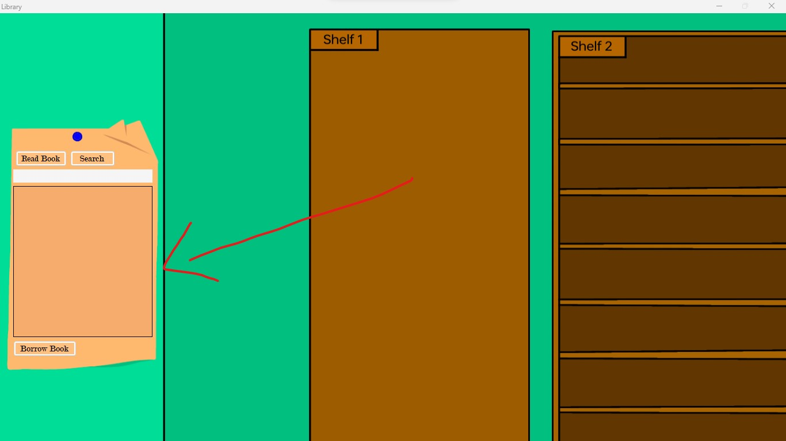
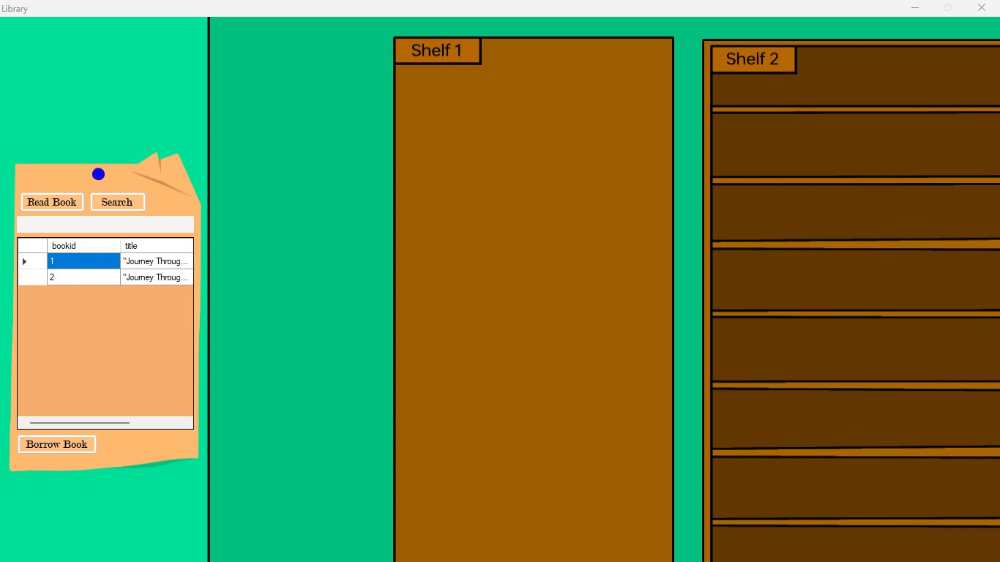
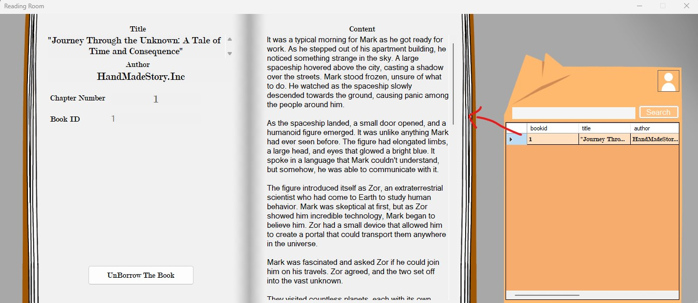
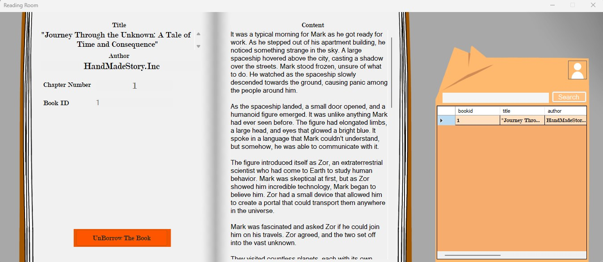
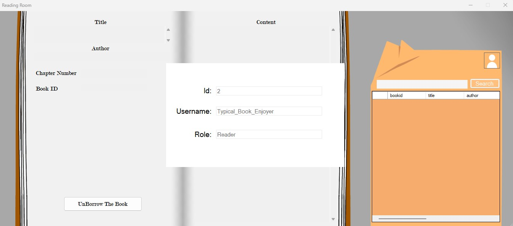

LUMS
Library Use & Manage System
LUMS policy
The Library Use & Manage System's, also known as "LUMS" have a Guidelines that is crucial in maintaining the quality and integrity of the library's collection. It is the responsibility of all library users to respect these guidelines and help to maintain a safe and welcoming environment for all. The following guidelines outline the expectations and requirements for selecting and distributing books within the library:
1. Racism and Harassment:
The library strictly prohibits the inclusion of any content that promotes racism, sexism, or harassment. Books must not contain any material that is derogatory or demeaning towards any race, religion, gender, or ethnicity. It is essential to ensure that all library users feel respected and valued.
2. Age-Appropriate Content:
The library has established guidelines for age-appropriate content to cater to its diverse audience. Books must be suitable for their intended readership. The library will not tolerate the distribution of books that contain explicit or graphic content not suitable for minors. It is important to provide a safe and enriching experience for library users of all ages.
3. Copyrighted Materials:
Respecting copyright laws is crucial in maintaining the legal and ethical standards of the library. Books must not contain any copyrighted material used without proper permission from the owner. It is the responsibility of the library and its users to adhere to copyright regulations and respect intellectual property rights.
4. Use of Curse Words:
The library may impose restrictions on the use of curse words in written materials. While the library acknowledges that certain books may contain dialogue with curse words for artistic or contextual purposes, it requires that such words be modified to maintain a level of appropriateness. Specifically, the alphabet a, i, u, e, o in curse words should be replaced with #, $, or & while retaining the intended meaning. This ensures that books remain accessible to a wide range of library users while balancing artistic expression.
5. Reporting Inappropriate Material:
If you come across any material within the library's collection that you deem inappropriate or offensive, it is essential to report it promptly to the library staff. Library staff members are trained to handle such situations professionally and will investigate the matter accordingly. Reporting inappropriate material contributes to maintaining the library's integrity and ensuring a positive experience for all users.
6. Responsibility of Library Users:
All library users have a shared responsibility to uphold the guidelines outlined above and contribute to a safe and welcoming environment for everyone. It is important to be mindful of the content we choose and consume, treating others with respect and sensitivity. Failure to comply with these guidelines may result in the revocation of library privileges to ensure the well-being of the entire community.
7. Returning Book:
Guidelines for Returning Borrowed Books Promptly: All library users must return borrowed books within seven days from the borrowing date. Keep track of due dates, reborrow if needed, and return books properly. Late returns forces Administrator to UnBorrow, and your account might be banned for a few days or may even deleted.
Conclusion:
The Library Management System's "Appropriate Book" policy plays a vital role in fostering a safe, inclusive, and enriching environment for library users. By adhering to the guidelines regarding content selection and distribution, we can ensure that the library remains a valuable resource for all members of the community. Together, let us uphold these standards and promote an atmosphere of respect, diversity, and intellectual growth within the library.
Guide
> Reader Role Access
After You logged in and have been validated, you can access 2 designated room for reader.
The first one is Library room, which you can click any part of the first shelf to display the listed book in the library.
 To borrow a book, kindly navigate to the Row Header of the desired book in question and thereafter, proceed to click on the designated "Borrow Book" button. This action would enable you to borrow the selected book.
If you have borrowed a book or simply just wanted to read your borrowed book, you can click on the "Read Book" button, which will take you to the "Reading Room."
 The "UnBorrow Book" Button is designated for you returning the book to library. Before Clicking the Button, make sure the current book that displayed is the book you want to return because after the button is clicked the book will immidiately returned and disappear from your borrowed book list.
> Writer Role Access
After You logged in and have been validated, you will be directed to your Writer Room.

At first glance it seems similiar like the Reading Room, but it's not. Each component is different, Let's Started by the Book list.
The Book list only shows the book that the Writer Create, the Title, chap_num, content can be edited for making a new Book or Editing their Created Book
Reference
> User Info Button
To access your account information, including your ID, username, and current role, please click on this designated icon. This will trigger the display of an information panel that provides details to your current account.
> Roles
LUMS incorporates four roles: Visitor, Reader, Writer, Administrator, and Manager. Each role possesses distinct access levels and privileges, enabling efficient utilization and administration within the system.
> Book Borrowing
During the initial phase of LUMS Beta version, users are provided with the opportunity to borrow books free of charge. It should be noted, however, that as the community grows and stabilizes, potential changes may be introduced to this policy in order to ensure the sustainability and long-term viability of the platform.